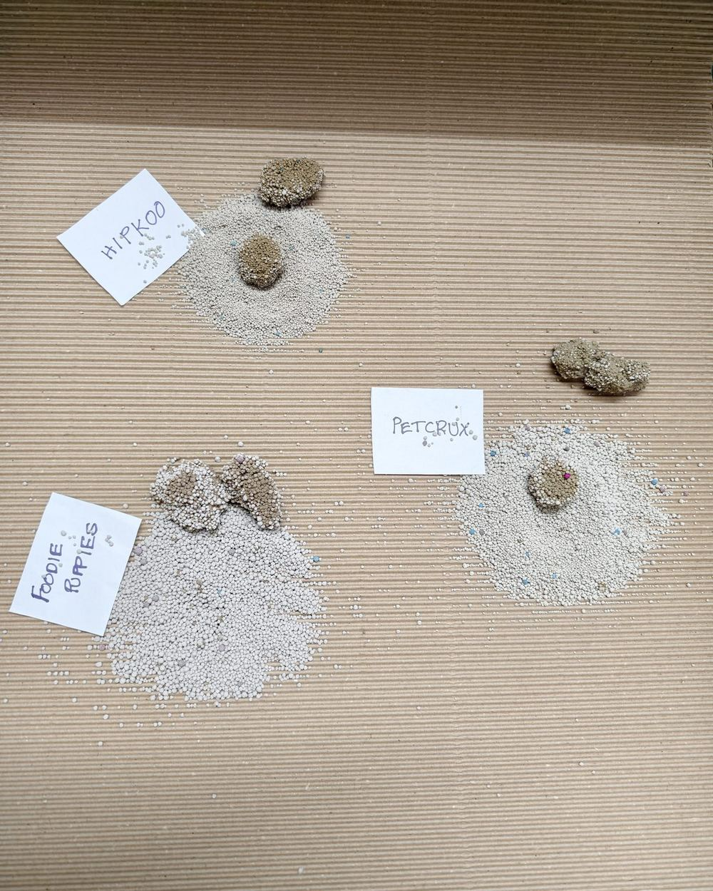
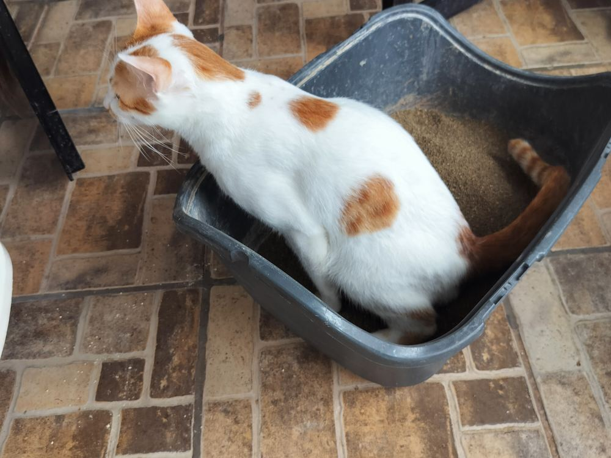
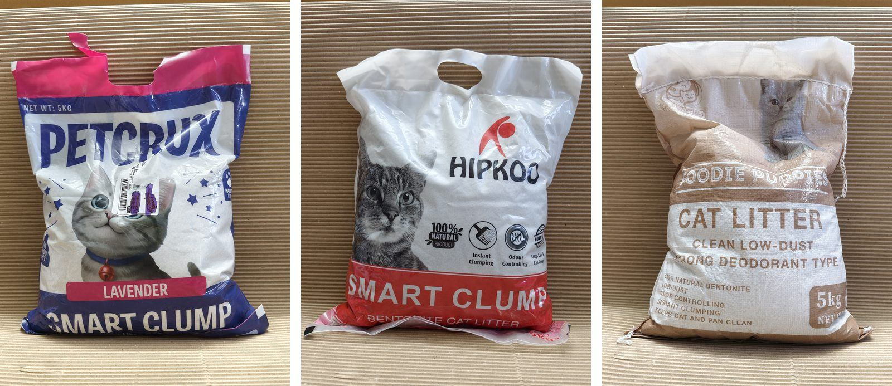
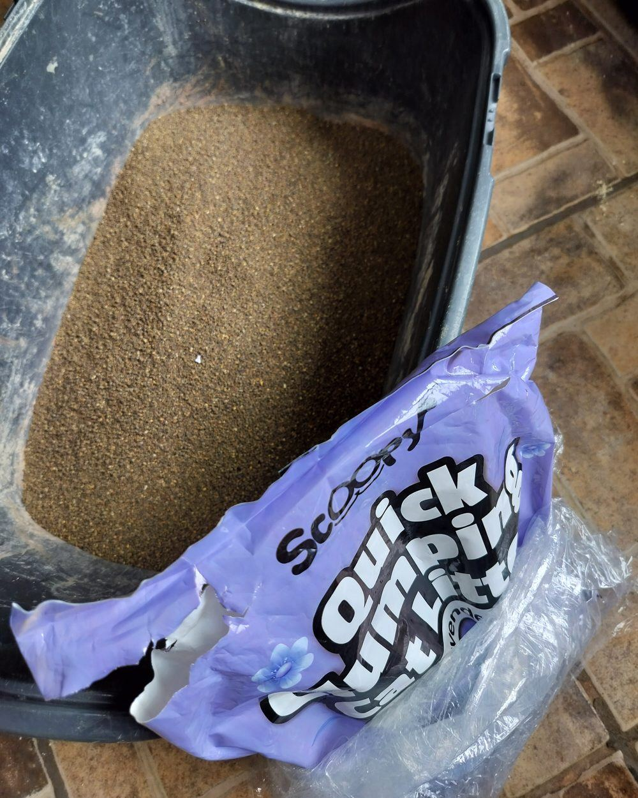
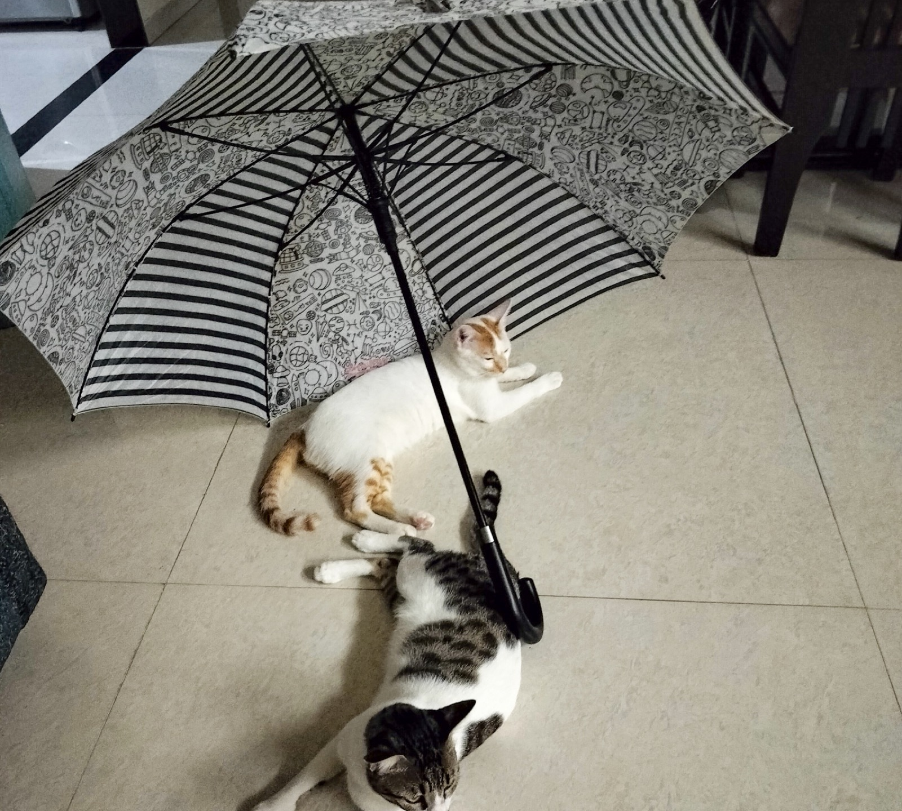
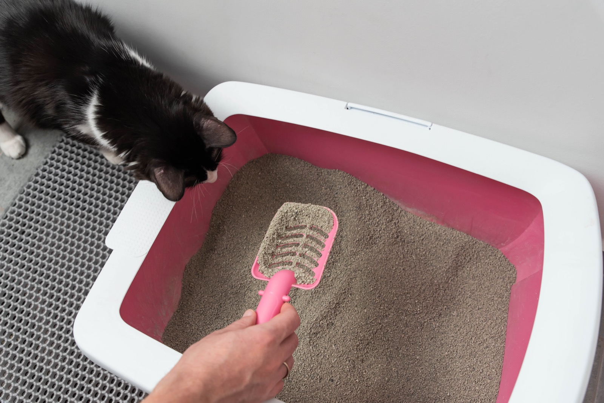

catadoption_pune
catadoption_pune

Short version: PetCrux, Hipkoo and Foodie Puppies all clumped well in my test, so buy whichever is cheapest that day, in the biggest pack you can carry and store. Skip the fine, dusty kind. In the monsoon, keep the box somewhere that stays dry after a real downpour, and raise it a few centimetres off the floor.
What clumping litter does
Clumping litter turns each wee into one firm lump. You lift the lump out with a scoop and the rest of the box stays clean, so you top the box up instead of emptying it. A litter that clumps badly crumbles on the scoop and leaves the wet behind.

Three litters, one water test
I bought all three on Amazon. All three are bentonite clay, the grey clumping kind. I put a pile of each on a sheet of cardboard, poured a splash of water on each in place of pee, and lifted the clumps out by hand. The differences were small, and mostly about the size of the grain.

PetCrux has been my favourite for years. It made a firm, round clump.
Hipkoo has a few more small particles in it, and it worked out really well: it clumped quickly, and the clumps were easy to clean out. The finer grain might make me sneeze a bit more.
Foodie Puppies looked the best of the three at first glance, with bigger grains. In the test the water sank through those bigger grains to the cardboard more easily, and the clump came out flatter and wider. It still did well.
So I'd happily buy any of the three, whichever is cheaper that day. A clumping litter from the pet shop near you does the job too, as long as it isn't the fine, dusty kind.
Pet Pattern wasn't in this test, and it's the other one we keep coming back to. Plenty of brands print "low dust" on the bag; this one actually is, it clumps properly, a tray lasts longer than the others we have tried, and it does not smell. There are dupes about, and more than once we ordered it and something else came home, so check the pack when it arrives.
How much to buy at a time
Litter doesn't go off, so a bigger pack saves money if you have somewhere to keep it. I buy 10 kg: it's the weight I can carry around easily, and the size I see offered most often. Bigger packs can arrive burst in the box. I have Subscribe & Save set up for it, and I keep my storage space for the food bags, which cost more.
My four cats get through about 20 kg a month, so with one cat a 10 kg pack lasts about two months. In the monsoon, clumping litter pulls damp out of the air, so roll an open bag shut after every top-up. With one cat, 5 kg is plenty then.
Prices have dropped a lot in the last year or two, and there are far more brands than there used to be. I think more people are adopting cats, and the competition helps.
The two I don't buy again
Purepet: fine dust, it doesn't trap smells, and it doesn't work well. It's OK in summer, but no other time of year. Scoopy, the bag below, is very similar.

In the monsoon, the problem is the floor
Monsoon litter trouble is really three small problems stacked up: floors that stay damp for hours, wet paws tracking litter gunk through the house, and litter that turns soggy before the cat ever uses it. None of them needs new equipment to fix. They need the box moved, lifted, and fed differently for three months.
I did the exercise myself, after every rain, in my own house. The spot I would have sworn was safe wasn't. Which is the whole point of the next section.

Map your dry spots — after the rain, not before
Wait for one honest downpour, then walk the house and look at the floor. You're marking three things:
Leak walls. Any wall with an old seepage stain will sweat again this year. Don't put the box against it, even if it's dry today.
Splash zones. The arc inside any window or balcony door that catches slanted rain. Puddles wander further than you think. Check an hour after the rain stops, not during.
The path. Wherever the box goes, your cat walks there on damp paws and walks back with litter stuck to them. Lay a washable mat along that last stretch: it catches the tracked litter so your floor doesn't.
Then lift the box 5–8 cm off the floor. A paver block, a wooden plank across two bricks, or a sturdy inverted tray all work. The point is that a wet-mopped or seeping floor never touches the base of the box, and the litter inside stays drier for days longer.
A ready-made litter-trapping mat works too, but an old rubber doormat or a folded jute rug does the same job and washes just as well.
Covered boxes: dry on the outside, damp on the inside
A covered box sounds like the obvious monsoon answer: it keeps drips and splash out. The trade-off is that it also keeps humidity in. Inside a closed box in July, damp litter and smell build up faster, and some cats will simply refuse the whole arrangement.
If you use one: scoop more often than you do in winter, and take the door flap off for the season so air actually moves through. If you're buying one, pick a design with real ventilation, or make your own weather shield by placing an open box under a stool with a towel over the top. Roof, airflow, no trapped smell.

What the scoop goes into. Scooped litter smells faster in July than in any other month, so it gets bagged and tied the same day, not left in an open bin. Any bag you already have will do. I use Beco's compostable garbage bags for this because they don't leak on the way down to the building's bin. A sheet of old newspaper folded around the scoop-load and dropped straight into the day's rubbish costs nothing and works too.
Travelling? Sitter-proof the setup before you go
Monsoon is family-visit season, and a litter setup that lives in your head fails the day someone else runs it. Before you travel, leave one page (paper, not a forwarded chat message) with four things on it:
1. Where the box is and why it's there, so a well-meaning sitter doesn't helpfully move it back to the nice-looking spot that floods. 2. The scooping schedule. 3. Where the litter and the spare mat are. 4. What normal looks like for your cat, so they can tell ordinary monsoon grumpiness from something worth a call.
And don't move the box to a new spot the day before you leave: a new location and a new human at the same time is how accidents happen. Shift it a week early so the cat has settled before you're gone.
The three-month checklist
☐ Walk the house after one real downpour; mark leak walls and splash zones · ☐ Move the box to a proven dry spot, a week before you need it to matter · ☐ Raise it 5–8 cm · ☐ Washable mat on the walking path · ☐ Open litter bag rolled shut · ☐ Covered box: flap off, scoop more · ☐ One-page sitter note before any trip.
Questions? DM us.
We're @catadoption_pune on Instagram — DMs are how everything here works.